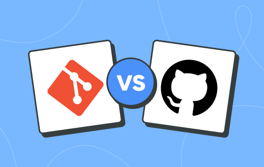
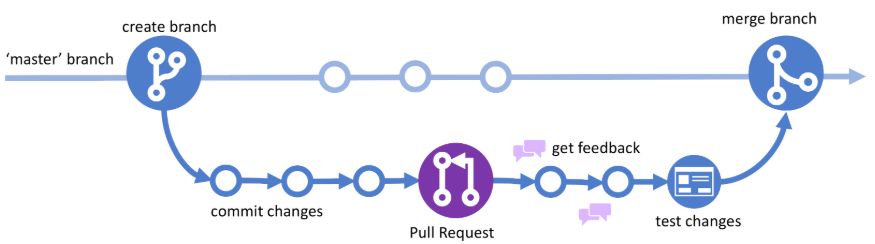
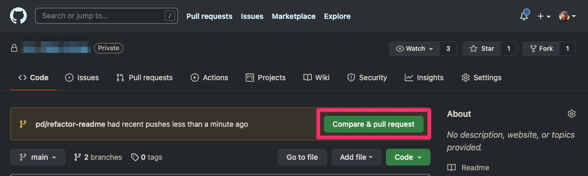
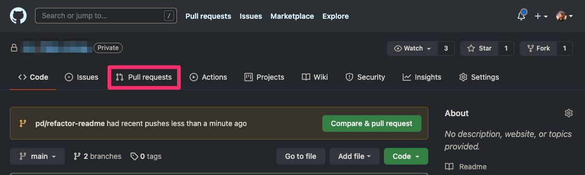
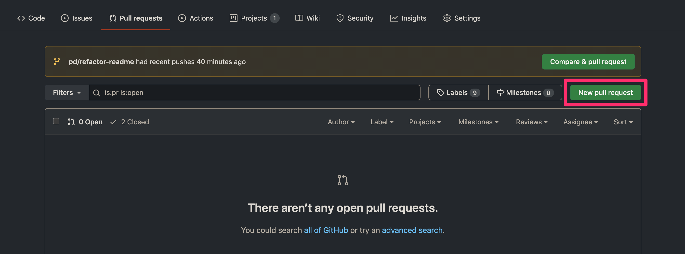
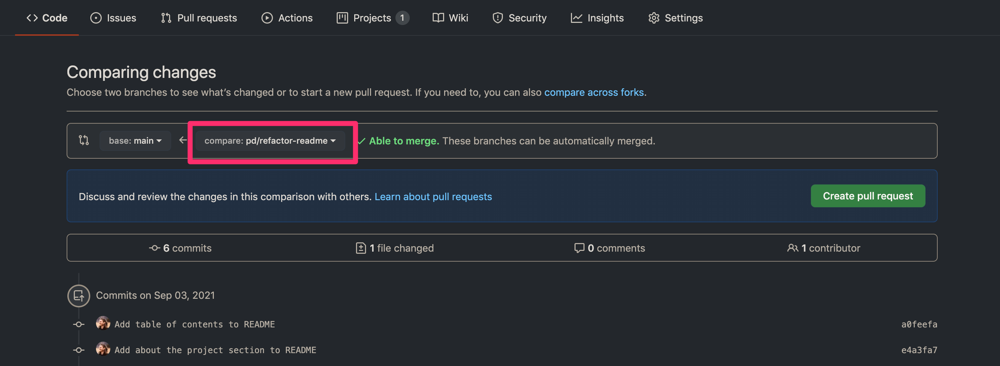
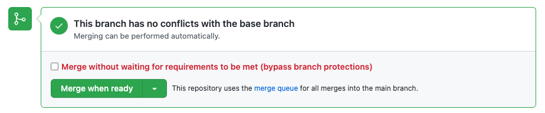

1. Acerca de GitHub y Git
1.1. ¿Qué es GitHub?
GitHub es una plataforma en la nube donde puedes almacenar, compartir y colaborar con otros para escribir código.
Almacenar tu código en un "repositorio" en GitHub te permite:
- Mostrar o compartir tu trabajo: Publica tus proyectos para que otros los vean y utilicen.
- Rastrear y gestionar cambios: Mantén un historial completo de todas las modificaciones realizadas al código a lo largo del tiempo.
- Recibir retroalimentación: Permite que otros revisen tu código y sugieran mejoras.
- Colaborar en proyectos compartidos: Trabaja con otros sin preocuparte de que tus cambios afecten el trabajo de colaboradores antes de integrarlos.
La colaboración, una característica fundamental de GitHub, es posible gracias al software de código abierto Git, que es la base sobre la que se construye GitHub.
1.2. ¿Cómo trabajan Git y GitHub juntos?

Cuando subes archivos a GitHub, los almacenas en un "repositorio Git". Esto significa que cuando realizas cambios (o "commits") en tus archivos en GitHub, Git automáticamente comienza a rastrear y gestionar tus cambios.
Hay muchas acciones relacionadas con Git que puedes completar en GitHub directamente en tu navegador, tales como crear un repositorio Git, crear ramas y subir y editar archivos.
Sin embargo, la mayoría de las personas trabajan en sus archivos localmente (en su propia computadora) y luego continuamente sincronizan estos cambios locales, y todos los datos relacionados con Git, con el repositorio "remoto" central en GitHub. Hay muchas herramientas que puedes usar para hacer esto, como GitHub Desktop.
Una vez que comienzes a colaborar con otros y todos necesiten trabajar en el mismo repositorio al mismo tiempo, continuamente:
- Extraes (Pull): Obtienes todos los últimos cambios realizados por tus colaboradores desde el repositorio remoto en GitHub.
- Envías (Push): Subes tus propios cambios al mismo repositorio remoto en GitHub.
Git determina cómo fusionar de forma inteligente este flujo de cambios, y GitHub te ayuda a gestionar el flujo mediante características como "pull requests".
2. Flujo de GitHub (GitHub Flow)
El flujo de GitHub (GitHub Flow) es un flujo de trabajo ligero basado en ramas.

2.1. Requisitos previos
Para seguir el flujo de GitHub, necesitarás:
- Una cuenta de GitHub
- Un repositorio
Si necesitas crear una cuenta, consulta la documentación sobre crear una cuenta en GitHub. Si necesitas crear un repositorio, consulta el inicio rápido de repositorios. Si deseas encontrar un repositorio existente para contribuir, consulta cómo encontrar formas de contribuir al código abierto en GitHub.
2.2. Pasos del Flujo de GitHub
2.2.1. Crear una rama (Create a branch)
Crea una rama en tu repositorio.
Un nombre de rama corto y descriptivo permite a tus colaboradores ver el trabajo en curso de un vistazo.
Por ejemplo: increase-test-timeout o add-code-of-conduct.
¿Por qué crear una rama?
- Al crear una rama, creas un espacio para trabajar sin afectar la rama principal (main/master).
- Además, das a tus colaboradores la oportunidad de revisar tu trabajo.
2.2.2. Realizar cambios (Make changes)
En tu rama, realiza los cambios deseados en el repositorio. Puedes crear nuevos archivos, editar archivos existentes, renombrar archivos, mover archivos a una nueva ubicación o eliminar archivos del repositorio.
Tu rama es un lugar seguro para realizar cambios:
- Si cometes un error, puedes revertir tus cambios o hacer cambios adicionales para corregir el error.
- Tus cambios no aparecerán en la rama principal hasta que fusiones (merges) tu rama.
Hacer commits y pushes de tus cambios:
Realiza commits y push de tus cambios a tu rama.
Dale a cada commit un mensaje descriptivo para ayudarte a ti y a futuros colaboradores a entender qué cambios contiene el commit.
Por ejemplo: fix typo o increase rate limit.
Idealmente, cada commit contiene un cambio aislado y completo. Esto facilita revertir tus cambios si decides tomar un enfoque diferente.
Al hacer commits y push de tus cambios, respaldarás tu trabajo en almacenamiento remoto. Esto significa que puedes acceder a tu trabajo desde cualquier dispositivo. También significa que tus colaboradores pueden ver tu trabajo, responder preguntas y hacer sugerencias o contribuciones.
2.2.3. Crear un Pull Request
Crea un pull request para pedir a tus colaboradores retroalimentación sobre tus cambios. La revisión de pull requests es tan valiosa que algunos repositorios requieren una revisión aprobada antes de que se puedan fusionar los pull requests.
Al crear un pull request, incluye:
- Un resumen de los cambios
- Qué problema resuelven
- Imágenes, enlaces y tablas para ayudar a comunicar esta información
- Un enlace al problema si tu pull request lo aborda (esto cerrará automáticamente el problema cuando se fusione el pull request)
Hay un par de formas para comenzar tu Pull Request.
Opción 1: Desde tu repositorio
Si realizaste un push reciente en tu rama, puede aparecer un botón verde "Compare & Pull Request" en la pantalla de inicio de tu repositorio.
Haz clic en él para comenzar tu pull request.

Opción 2: A través de la página de Pull Requests
En cualquier lugar de tu página de repositorio, haz clic en 'Pull requests' en la barra de navegación del repositorio.

Luego, haz clic en el botón verde 'New pull request'.

Asegúrate de seleccionar en la segunda caja la rama que deseas fusionar en main (tu rama debe estar en el lado derecho).

Haz clic en el botón verde 'Create pull request' para comenzar tu pull request.

2.2.4. Abordar los comentarios de revisión (Address review comments)
Los revisores deben dejar preguntas, comentarios y sugerencias. Los revisores pueden comentar en todo el pull request o agregar comentarios a líneas o archivos específicos.
Tú y los revisores pueden insertar imágenes o sugerencias de código para aclarar comentarios.
Puedes continuar haciendo commits y pusheando cambios en respuesta a las revisiones. Tu pull request se actualizará automáticamente.
2.2.5. Fusionar tu Pull Request (Merge your pull request)
Una vez que tu pull request sea aprobado, fusiona tu pull request. Esto fusionará automáticamente tu rama para que tus cambios aparezcan en la rama principal.

GitHub retiene el historial de comentarios y commits en el pull request para ayudar a futuros colaboradores a entender tus cambios.
Situaciones especiales:
- GitHub te dirá si tu pull request tiene conflictos que deben resolverse antes de fusionarse.
2.2.6. Eliminar tu rama (Delete your branch)
Después de fusionar tu pull request, elimina tu rama. Esto indica que el trabajo en la rama ha finalizado y evita que tú u otros usen accidentalmente ramas antiguas.
No te preocupes por perder información: Tu historial de pull request y commits no se eliminará. Siempre puedes restaurar tu rama eliminada o revertir tu pull request si es necesario.
2.3. Resumen del Flujo de GitHub
El flujo completo de GitHub se puede resumir en los siguientes pasos:
- Create a branch - Crea una rama con un nombre descriptivo
- Make the changes - Edita archivos, haz commits y pushes
- Create a Pull Request - Solicita revisión de tus cambios
- Merge from branch to master - Merging de tu rama en main/master
- Delete the branch - Limpia borrando la rama completada
Herramientas disponibles: Puedes completar todos los pasos del flujo de GitHub a través de la interfaz web de GitHub, línea de comandos, GitHub CLI o GitHub Desktop.
3. Ventajas y Mejores Prácticas
3.1. Ventajas de usar GitHub
- Control de versiones: Mantén un historial completo de todos los cambios
- Colaboración: Trabaja fácilmente con otros desarrolladores en el mismo proyecto
- Integración: Conecta con herramientas de CI/CD para automatizar pruebas y despliegues
- Documentación: Utiliza archivos README, wikis y páginas para documentar tu proyecto
- Seguridad: Controla el acceso al repositorio y revisa cambios antes de integrarlos
- Comunidad: Descubre proyectos, contribuye a código abierto y conecta con otros desarrolladores
3.2. Mejores Prácticas
- Mensajes de commit claros: Usa mensajes descriptivos que expliquen qué cambio hace el commit y por qué
- Commits pequeños y atómicos: Cada commit debe contener un cambio lógico e independiente
- Ramas por característica: Crea una rama separada para cada nueva característica o corrección
- Revisión de código: Revisa siempre los cambios de otros antes de fusionar
- Mantén branches limpias: Elimina ramas completadas después de fusionarse
- Sigue un flujo consistente: El GitHub Flow es simple pero efectivo para la mayoría de los proyectos